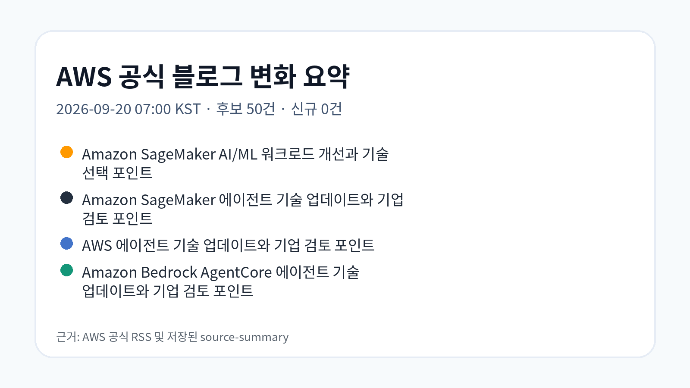
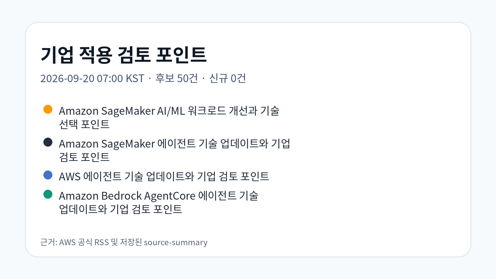
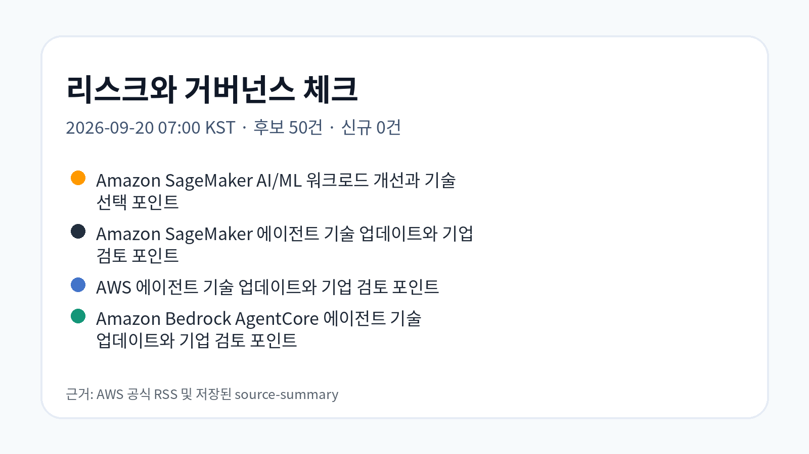

Amazon SageMaker AI/ML 워크로드 개선과 기술 선택 포인트
공식 AWS Machine Learning Blog에 게시된 글로, Amazon SageMaker 관련 기능·사례·구현 방식을 기업 기술 의사결정 관점에서 검토할 수 있는 내용입니다.
원문 보기공식 RSS 3개에서 후보 50건을 확인했고, 신규 저장 0건을 기준으로 기업 AI·Data·Cloud 의사결정 관점의 근거 중심 시사점을 정리했습니다.
신규 게시물은 확인되지 않아 최신 검증 AWS source를 fallback 근거로 사용했습니다. 새 글로 오인하지 않도록 표시합니다.
공식 AWS Machine Learning Blog에 게시된 글로, Amazon SageMaker 관련 기능·사례·구현 방식을 기업 기술 의사결정 관점에서 검토할 수 있는 내용입니다.
원문 보기공식 AWS Machine Learning Blog에 게시된 글로, Amazon SageMaker 관련 기능·사례·구현 방식을 기업 기술 의사결정 관점에서 검토할 수 있는 내용입니다.
원문 보기공식 AWS Machine Learning Blog에 게시된 글로, AWS 관련 기능·사례·구현 방식을 기업 기술 의사결정 관점에서 검토할 수 있는 내용입니다.
원문 보기공식 AWS Machine Learning Blog에 게시된 글로, Amazon Bedrock AgentCore 관련 기능·사례·구현 방식을 기업 기술 의사결정 관점에서 검토할 수 있는 내용입니다.
원문 보기공식 AWS Machine Learning Blog에 게시된 글로, Amazon Bedrock 관련 기능·사례·구현 방식을 기업 기술 의사결정 관점에서 검토할 수 있는 내용입니다.
원문 보기


이번 실행에서 확인한 자료는 AWS 공식 블로그가 AI/ML, 클라우드 서비스, 고객 사례를 중심으로 구체적인 구현 방식과 적용 검토 지점을 계속 제시하고 있음을 보여줍니다. 근거가 부족한 항목은 추가 확인이 필요합니다.
| 기사 | 게시 | 카테고리 |
|---|---|---|
| Amazon SageMaker AI/ML 워크로드 개선과 기술 선택 포인트 | 2026-09-19 | AI/ML |
| Amazon SageMaker 에이전트 기술 업데이트와 기업 검토 포인트 | 2026-09-19 | AI/ML |
| AWS 에이전트 기술 업데이트와 기업 검토 포인트 | 2026-09-19 | AI/ML |
| Amazon Bedrock AgentCore 에이전트 기술 업데이트와 기업 검토 포인트 | 2026-09-19 | AI/ML |
| Amazon Bedrock 공식 블로그 업데이트와 기술 검토 포인트 | 2026-09-19 | AI/ML |
공식 블로그의 사례와 기능 발표는 적용 가능성을 보여주지만, 실제 기업 적용 전에는 IAM 권한, 데이터 경계, 비용 구조, 서비스 리전, 기존 시스템 연계, 감사 추적 가능성을 별도 검증해야 합니다.
관찰된 사실: 공식 AWS Machine Learning Blog에 게시된 글로, Amazon SageMaker 관련 기능·사례·구현 방식을 기업 기술 의사결정 관점에서 검토할 수 있는 내용입니다.
기업 의사결정 시사점/리스크/기회: 관찰된 변화는 Amazon SageMaker 관련 적용 영역이 구체화되고 있다는 점입니다. 원문 근거를 기준으로 보안, 비용, 운영 책임, 기존 시스템 연계 가능성을 별도 검토해야 합니다.
관찰된 사실: 공식 AWS Machine Learning Blog에 게시된 글로, Amazon SageMaker 관련 기능·사례·구현 방식을 기업 기술 의사결정 관점에서 검토할 수 있는 내용입니다.
기업 의사결정 시사점/리스크/기회: 관찰된 변화는 Amazon SageMaker 관련 적용 영역이 구체화되고 있다는 점입니다. 원문 근거를 기준으로 보안, 비용, 운영 책임, 기존 시스템 연계 가능성을 별도 검토해야 합니다.
관찰된 사실: 공식 AWS Machine Learning Blog에 게시된 글로, AWS 관련 기능·사례·구현 방식을 기업 기술 의사결정 관점에서 검토할 수 있는 내용입니다.
기업 의사결정 시사점/리스크/기회: 관찰된 변화는 AWS 관련 적용 영역이 구체화되고 있다는 점입니다. 원문 근거를 기준으로 보안, 비용, 운영 책임, 기존 시스템 연계 가능성을 별도 검토해야 합니다.
관찰된 사실: 공식 AWS Machine Learning Blog에 게시된 글로, Amazon Bedrock AgentCore 관련 기능·사례·구현 방식을 기업 기술 의사결정 관점에서 검토할 수 있는 내용입니다.
기업 의사결정 시사점/리스크/기회: 관찰된 변화는 Amazon Bedrock AgentCore 관련 적용 영역이 구체화되고 있다는 점입니다. 원문 근거를 기준으로 보안, 비용, 운영 책임, 기존 시스템 연계 가능성을 별도 검토해야 합니다.
관찰된 사실: 공식 AWS Machine Learning Blog에 게시된 글로, Amazon Bedrock 관련 기능·사례·구현 방식을 기업 기술 의사결정 관점에서 검토할 수 있는 내용입니다.
근거 출처 URL: https://aws.amazon.com/blogs/machine-learning/introducing-kimi-k3-on-amazon-bedrock/
기업 의사결정 시사점/리스크/기회: 관찰된 변화는 Amazon Bedrock 관련 적용 영역이 구체화되고 있다는 점입니다. 원문 근거를 기준으로 보안, 비용, 운영 책임, 기존 시스템 연계 가능성을 별도 검토해야 합니다.
원문과 추출 Markdown은 Obsidian raw, LLM Wiki collection, GBrain source 파일에 보존했습니다. 화면 표시 텍스트는 한국어 필드만 렌더링하도록 구성했습니다.